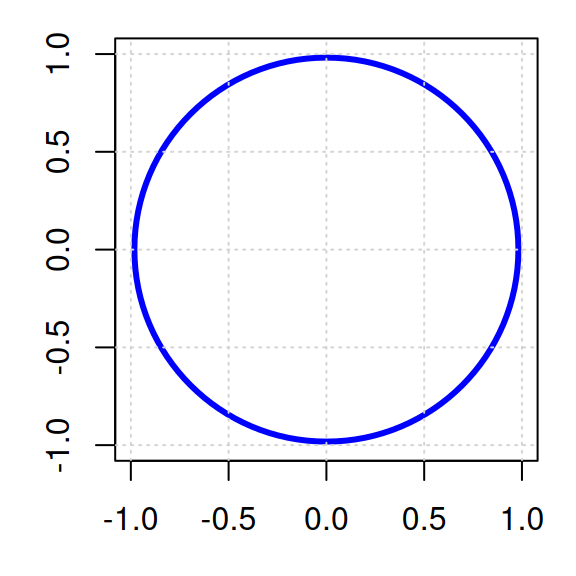

In many scientific and statistical problems, we are interested in computing quantities that can be written as integrals. Examples include:
probabilities;
expected values;
variances;
areas and volumes;
likelihoods and posterior means in Bayesian statistics.
For simple models, these integrals can sometimes be evaluated analytically using calculus. However, in realistic applications, exact solutions are often unavailable or extremely difficult to derive.
Monte Carlo integration provides a computational alternative. Instead of solving the integral analytically, we estimate it using random sampling.
The central idea is remarkably simple:
averages computed from random samples can approximate complicated integrals.
This transforms integration from a calculus problem into a simulation problem.
Monte Carlo integration is one of the foundational ideas behind modern computational statistics, Bayesian inference, quantitative finance, machine learning, and uncertainty quantification.
Integration as Expectation
Monte Carlo integration is a method for estimating the value of an integral using random sampling. The basic idea is to sample points from a probability distribution and use these samples to approximate the integral. For example, if we want to estimate the integral of a function \(f(x)\) over a domain \(D\), we can sample points \(x_i\) from a distribution that covers the domain and compute the average value of \(f(x_i)\) to get an estimate of the integral.
Suppose \(X\) is a continuous random variable with probability density function \(f(x)\), and let \(h(x)\) be a function of interest.
Recall from probability theory that the expectation of \(h(X)\) is
\[
\mathbb{E}[h(X)] = \int h(x)f(x)\,dx.
\]
This observation is fundamental.
Many difficult integrals can be rewritten as expectations of random variables.
Once written in this form, the integral can be approximated using simulation.
Example 1: Estimating an Expected Value
Suppose
\[
X \sim \text{Uniform}(0,1)
\]
and we wish to compute
\[
I = \int_0^1 x^2\,dx.
\]
Analytically,
\[
I = \left[ \frac{x^3}{3} \right]_0^1 = \frac{1}{3}.
\]
But observe that if \(X \sim \text{Uniform}(0,1)\), then
\[
f(x)=1, \quad 0<x<1,
\]
so
\[
I
=
\int_0^1 x^2 f(x)\,dx
=
\mathbb{E}[X^2].
\]
Therefore, instead of evaluating the integral directly, we can:
generate many random samples from Uniform(0, 1);
square each sample;
compute the average.
library(Ryacas)x <-ysym("x")f <- x^2F <-integrate(f, x); F
This estimator is simply the sample mean of the simulated values.
TipWhy This Works
Monte Carlo integration is justified by the Law of Large Numbers (LLN).
Recall from Week 1 that if \(X_1,X_2,\dots,X_n\) are i.i.d. with finite mean \(\mu\), then
\[
\bar x
\to
\mu
\quad \text{as } n\to\infty.
\]
Since the Monte Carlo estimator \(\hat I_n\) is simply a sample average, it converges to the true expectation \(\mathbb{E}[h(X)]\) as the number of samples increases. Thus, \[
\hat I_n \to I \quad \text{as } n\to\infty.
\]
Example 2: Estimating an Area
One of the most famous examples of Monte Carlo integration is estimating the value of \(\pi\).
The key idea is that Monte Carlo methods can approximate geometric areas using random sampling, which otherwise calculus would require difficult integration.
Consider the square \([-1,1]\times[-1,1]\) with area 41.
Inside the square is a circle of radius 1 centred at the origin. The equation of the circle is
\[
x^2 + y^2 = 1.
\tag{42.3}\]
Since the radius of the circle is 1, the area of the circle is
\[
\pi r^2 = \pi (1)^2 = \pi.
\]
How can we use Monte Carlo integration to estimate the area of the unit circle \(\pi\)?

Method 1: Using Curve-Height
The first method is to express the area as a single integral and then apply the Monte Carlo estimator.
Step 1: Expressing Area as an Integral
From Equation 42.3, rewriting it in terms of \(y\) gives
\[
y = \pm\sqrt{1-x^2}.
\]
Then, from the geometric interpretation of the definite integral2, the area of the circle can be written as
\[
\begin{aligned}
A &= \int_{-1}^1 \left( \sqrt{1-x^2} - (-\sqrt{1-x^2}) \right) dx \\
A &= \int_{-1}^1 2\sqrt{1-x^2}\,dx.
\end{aligned}
\]
Step 2: Rewriting as an Expectation
Since \(X \sim \text{Uniform}(-1,1)\), its density is
\[
f(x) = \frac12, \quad -1 < x < 1.
\]
Rewriting the area integral as in Equation 42.1, we can express the area as an expectation
\[
A = \int_{-1}^1 4\sqrt{1-x^2} \left(\frac12\right)\,dx = \mathbb{E}[4\sqrt{1-X^2}].
\tag{42.4}\]
Step 3: Apply Monte Carlo Estimator
From Equation 42.2, the Monte Carlo estimator of the area is given by
The second method is to express the area as a double integral and then apply the Monte Carlo estimator. This method is more intuitive and closely related to the original idea of Monte Carlo methods, which is to use random sampling to approximate areas and volumes.
Step 1: Expressing Area as an Integral
The area of the circle can be written as a double integral,
This indicator function simply checks whether a point belongs to the circle. The integral therefore “adds up” all points inside the circle, producing the total area.
Step 2: Rewriting as an Expectation
Since \((X,Y)\) is uniformly distributed over the square \([-1,1]\times[-1,1]\), its joint density is
\[
f(x,y) = \frac{1}{4}, \quad -1 < x < 1,\; -1 < y < 1.
\]
NoteJoint Density of Uniform Distribution
For a defined rectangular region \([a, b] \times [c, d]\), if \(X\) and \(Y\) are independent Uniform(\(a, b\)) and Uniform(\(c, d\)) random variables, then their joint density is the product of their marginal densities:
which is close to the true value: \(\pi \approx\) 3.14159.
Comparison Monte Carlo Estimators
The curve-height method is better for showing Monte Carlo integration, while the dartboard method is better for showing simulation-based probability/area estimation.
Question: Which estimator is better in practice?
Both Monte Carlo estimators converge to the true value of \(\pi\) as the number of simulations increases. However, they do not converge at the same speed.
times as many simulations to achieve the same variance.
This comparison highlights an important idea:
Monte Carlo estimators are random, and different estimators can produce very different levels of variability.
Even when two estimators target the same quantity, one may fluctuate much more than the other.
This naturally leads to the question:
How does Monte Carlo estimation error behave?
Monte Carlo Error
Monte Carlo estimates are random because they depend on random samples. If we repeat the simulation, we obtain slightly different answers each time. The accuracy of the estimator is described by the Central Limit Theorem (CLT).
NoteCentral Limit Theorem for Monte Carlo Estimators
This tells us that the Monte Carlo error has approximately a normal distribution with mean zero and standard deviation \(\sigma/\sqrt n\).5
Since the typical size of random fluctuations is measured by the standard deviation, the magnitude of the Monte Carlo error shrinks proportionally to
\[
\boxed{
\frac{1}{\sqrt{n}}
}
\]
So,
100 simulations gives error roughly proportional to 1/10,
10,000 simulations gives error roughly proportional to 1/100.
This explains why Monte Carlo converges slowly, which is one of the main computational limitations of Monte Carlo methods.
Example: Monte Carlo Error in Estimating \(\pi\)
We estimate \(\pi\) using Monte Carlo integration with different numbers of simulated points, \(n = 100, 1000, 10000\). If the CLT is useful here, we should observe two things:
the estimates cluster around the true value of \(\pi\);
the spread of the estimates becomes smaller as \(n\) increases.
set.seed(1234)estimate_pi <-function(n) { x <-runif(n, -1, 1) y <-runif(n, -1, 1) inside <- x^2+ y^2<=1 pi_hat <-4*mean(inside)return(pi_hat)}# Number of repeated experimentsB <-1000# Different simulation sizesn_values <-c(100, 1000, 10000)# Repeat the Monte Carlo experiment for each nresults <-lapply(n_values, function(n) {replicate(B, estimate_pi(n))})names(results) <-paste0("n = ", n_values)# Summary statisticssapply(results, function(x) {c(mean =mean(x),sd =sd(x),bias =mean(x) - pi )})
n = 100 n = 1000 n = 10000
mean 3.136320000 3.138332000 3.1409696000
sd 0.160557268 0.051433911 0.0166427178
bias -0.005272654 -0.003260654 -0.0006230536
For small \(n\), the estimates vary widely because each simulation uses relatively few random points. As \(n\) increases, the estimates become more concentrated around the true value of \(\pi\). This shows the Monte Carlo estimator becoming more stable.
WarningHow to Reduce Monte Carlo Error by Half?
Suppose the current simulation size is \(n\), giving error approximately proportional to \(1/\sqrt n\). To reduce the error by half, we need to solve \[\frac{1}{\sqrt{N}} = \frac{1}{2} \times \frac{1}{\sqrt n},\]
where \(N\) is the new sample size, then \[\sqrt{N}=2\sqrt{n} \implies N = 4n.\]
To reduce the error by half, we need about four times as many simulated points.
Pros and Cons of Monte Carlo Integration
Monte Carlo integration has several important strengths.
Simple to implement (simulate \(\rightarrow\) evaluate \(\rightarrow\) average)
Works in high dimensions, where traditional numerical integration methods fail due to the curse of dimensionality.
Flexible as it can be applied to a wide variety of problems, including those with complex geometries, non-standard distributions, and intractable likelihoods.
Despite its flexibility, Monte Carlo integration also has limitations.
Results are approximate, not exact.
Slow convergence as Monte Carlo error decreases only at rate \(1/\sqrt n\)
Not suitable for rare-event problems as naive Monte Carlo may waste most simulations.
This motivates variance reduction methods and importance sampling, discussed later in the chapter.
Transition Toward MCMC
Monte Carlo integration works well when we can generate independent samples directly from the target distribution.
However, in many realistic problems, direct sampling is impossible.
For example:
Bayesian posterior distributions may have unknown normalising constants;
high-dimensional models may be analytically intractable;
complicated joint distributions may not have standard sampling algorithms.
This leads to a fundamental question:
What can we do if we cannot sample directly from the target distribution?
Markov chain Monte Carlo (MCMC) methods provide the answer.
Instead of generating independent samples directly, MCMC constructs a stochastic process whose long-run behaviour approximates the desired distribution.
After multiplying the error by \(\sqrt n\), the distribution of the error converges to a normal distribution with mean zero and variance \(\sigma^2\).↩︎
This is the same formula for the standard error of the sample mean from Week 1!↩︎